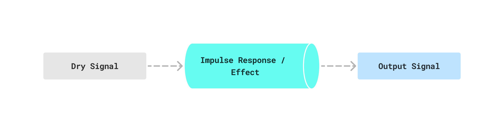

Audio DSP
Algorithm Behind Realistic Reverb? What is Convolution?
Introduction
Ever wonder how a dry vocal suddenly sounds like it is sitting inside a concert hall, or how an amp simulator seems to inherit the character of a real cabinet? A big part of that illusion comes from convolution.
Convolution is a mathematical operation that combines two signals to produce a third. In audio, you can think of one signal as the input and the other as the system, effect, or impulse response that shapes it.
If that equation looks abstract, the practical version is simpler: feed a dry signal into a system, and convolution tells you what comes out the other side.

Impulse Response Intuition
The impulse response is the sound a system produces when you excite it with a short impulse. In theory that impulse is a Dirac delta. In practice it can be approximated by something like a sharp clap, a starter pistol, or another short transient.
If you play that impulse in a concert hall, the direct sound arrives first and the reflections and decay come after it. That recorded result is the hall's impulse response. Once you have that response, you can convolve it with a dry vocal or instrument to apply the same acoustic character.
From Continuous to Discrete Signals
Computers do not operate directly on continuous-time audio. They work with samples, so the integral becomes a summation:
That direct form works, but it gets expensive quickly. Long signals and long impulse responses make naive convolution too slow for real-time use.

Why the Fourier Transform Helps
Signals live in both the time domain and the frequency domain. Convolution in time becomes plain multiplication in frequency:
That is why FFT-based convolution is so powerful. Instead of doing an expensive time-domain sum for every sample, you transform both signals, multiply them, then transform back:
In terms of complexity, the FFT approach changes the cost from to , which is why convolution reverb and related effects are practical in modern audio tools.
For a good visual explanation of the Fourier transform itself, Jez Swanson's interactive demo is still one of the clearest high-level references around.
Interested in the mathematical proof behind this?
This is the DTFT version of the argument, where frequency is continuous. In actual software we usually work with the DFT and FFT, which sample the frequency axis at a finite number of points.
Closing Thoughts
Convolution can feel abstract when it first shows up in a signal-processing class, but in audio it leads to very tangible results. It is one of those ideas where the math looks intimidating until you hear what it does.
Once you connect the dots between impulse responses, FFT-based multiplication, and a real reverb result, the whole topic becomes much easier to hold onto. Under the hood, there is a lot happening, but the core intuition is surprisingly clean.